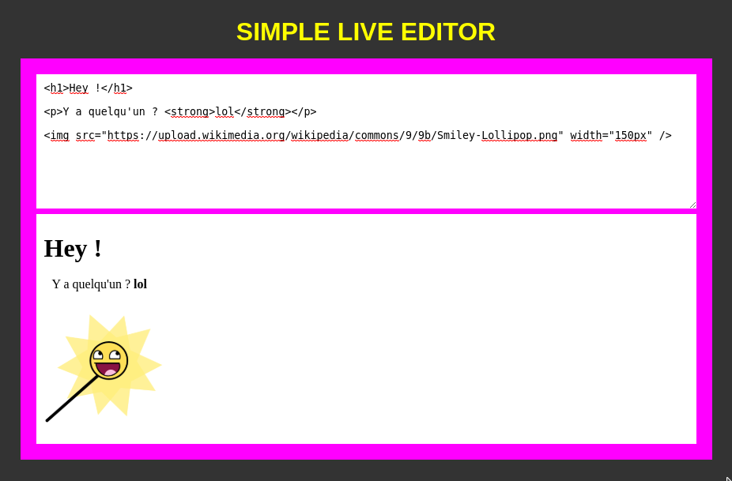

Votre but : permettre à l'utilisateur du site de saisir du texte, y compris du code HTML, dans une zone de saisie 🤔
Et là 🙏 à chaque touche du clavier tapé, le contenu de la zone de saisie est « injecté » dans une div, sous l'éditeur.
L'éditeur prend vie 🦄

En résumé, on va créer un éditeur HTML en temps réel (lol).